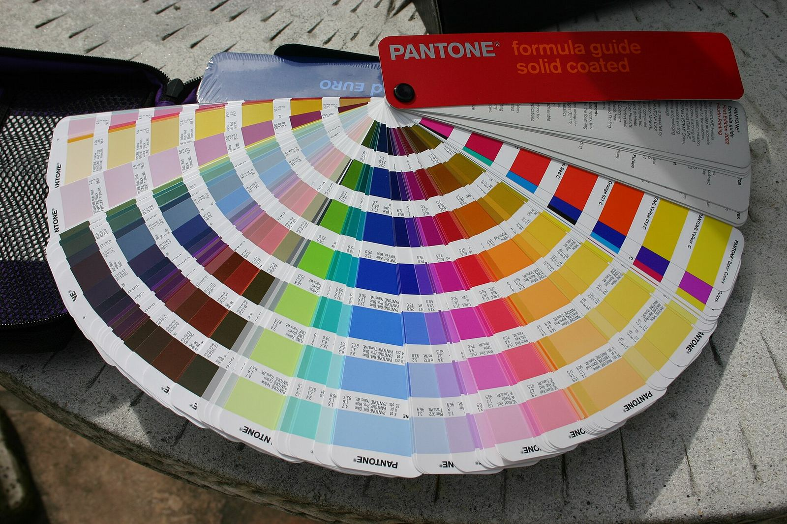

Canva 发布首个自研图像生成模型 Craft：两阶段规划+渲染，最高约 2K、30+ 画幅


Canva 10 月 22 日发布首个由 Canva Research 从零训练的图像生成模型 Canva Craft。官网称其采用两阶段架构：先由规划模型解读提示并写出构图计划（元素、空间关系、尺度、层级与需出现的文字），再由渲染模型生成最高约 2K 分辨率、逾 30 种画幅的图像。TechCrunch 与 The Verge 均转述了这一「先规划、再渲染」的设计与分辨率、画幅数字。
Canva 称 Craft 已在 Dream Lab 向全球用户开放，并可通过公开 API 使用；还计划经 Canva MCP 接入第三方助手（MCP「即将推出」）。官网自称其在众包评测 DesignArena 上跻身前列（例如称图像生成模型排名第四、并称 Canva Research 为「世界第二先进的图像生成实验室」等），本站仅转述公司自述，不作独立核实。训练数据方面，公司称更侧重 Canva 内容库中的人类设计模板，而非主要依赖照片。
官网称其采用两阶段架构：先规划构图，再渲染最高约 2K 的图像。
后续方面，Canva 称正在开发更省成本的 Craft-fast 与 Craft-ultrafast 变体；TechCrunch 提到 2024 年收购的 Leonardo.ai 研究人员参与了该模型。安全上，官网称 Craft 纳入 Canva Shield，含输入输出审核与举报工具。定价与具体配额以 Canva 产品页为准。
来源
摘记，不是官方媒体。DesignArena 排名与「第二先进实验室」等表述均为 Canva 自述；功能与开放范围以官网为准。